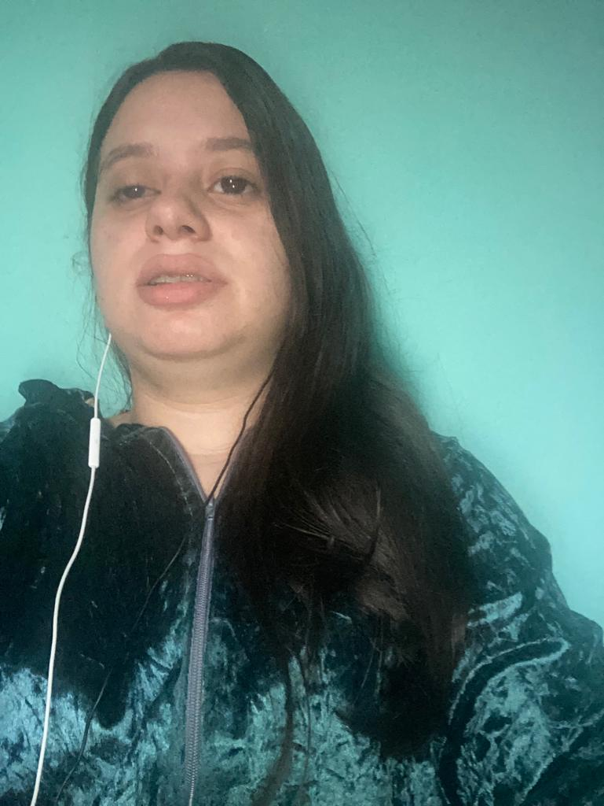

Quem somos
Que tal nos conhecer um pouco mais?

Alinne Rocha Luna, 21 anos, deficiente visual, ensino médio completo, trabalho na empresa Centro de integração empresa e Escola - CIEE como auxiliar administrativo em RH, Na Ária desenvolvimento humano e Organizacional.

Gastão Junior 38 anos, deficiente visual, cursando bacharelado em Administração de empresas, trabalha como administrador no seguimento de entidades paraestatais.
Três principais características: liderança de grupos, proficional autodata e facilidade em pesquisas.
Juliana Goto 38 anos, deficiente visual, faço bacharelado em administração e começando a ingressar no mundo de programação
Leticia Bomtorin 36 anos, deficiente auditiva, formada o curso de criação e produção grafica e digital em 2008, atualmente trabalho a área de comunicação, markentig e branding na Serasa e gosto de inovar e crescer a minha carreia e aprender o novo mundo de tecnologia.